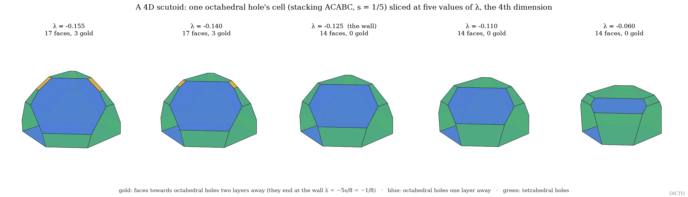
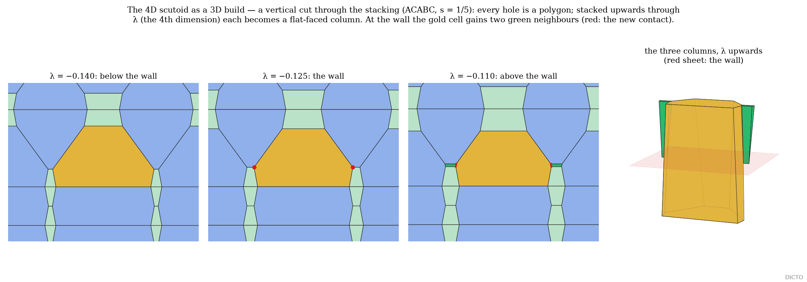

A scutoid is a cell between two surfaces whose outline changes on the way through: two cells that touched below stop touching, and two others start. Gómez-Gálvez and co-workers found the shape in curved living tissue in 2018; they called the change an apico-basal transition and compared it to the T1 transition of foams and cell sheets. Here the same move appears one dimension up. Slice a four-dimensional polytope with a moving hyperplane: its cells cross the slice as polygons tiling the slice's surface, and as the hyperplane moves those polygons trade neighbours. We show that for every simple 4-polytope nothing else ever happens, count the moves, and find the same move at the walls of the Swap Rule of close packing (#61).
A 4-polytope is simple if each corner lies in exactly four cells (equivalently, four edges). Take a generic height, a linear function taking different values at all corners. Slicing at height t gives a 3-polytope whose faces are the cross-sections of the cells that cross the hyperplane; two cells are neighbours in the slice when their shared 2-face crosses it.
Proof. Between corner heights no corner crosses the hyperplane, so the slice keeps its combinatorics. At a corner v let e₁, …, e₄ be its edges and Fj the cell not containing ej (each cell at v contains three of the four edges). Near v the slice just below v cuts the downward edges, just above v the upward ones. i = 1 (e₁ down): above v the slice cuts e₂, e₃, e₄, and the cell containing all three, F₁, appears as a small triangle; v is F₁'s lowest corner. i = 2 (e₁, e₂ down): below v the slice's local edge joins the crossings of e₁ and e₂ and lies in F₃ ∩ F₄, the 2-face containing e₁ and e₂; both its edges at v go down, so v is the top of that 2-face, and above v the two cells no longer share a face crossing the hyperplane (two cells of a polytope share at most one 2-face). Symmetrically F₁ ∩ F₂ contains e₃, e₄, has v as its bottom, and starts crossing: F₁ and F₂ begin to touch. Four distinct cells, one pair lost, one pair gained. i = 3 is i = 1 upside down. The number of corners with i downward edges is hi, independent of the generic height (the Morse-type count of the h-vector; Buchstaber–Panov, Toric Topology, ch. 1; Ziegler, Lectures on Polytopes, §8.2). ∎
Remarks (sketched, not proved here). Every dimension. The same argument in a simple d-polytope turns the passage of a corner of index i into a flip of the slice's boundary pattern exchanging an (i−1)-simplex for a (d−1−i)-simplex in its dual; in dimension 4 these flips are exactly birth, scutoid swap and death, in dimension 5 and higher they are higher scutoid moves, counted by hi. Non-simple polytopes. At a corner in more than four cells the moves clump; cutting such corners slightly back (a small truncation) makes the polytope simple and splits each clump into births, swaps and deaths.
Proof. Simplicity and the h-vectors from the face numbers (h₁ = f₃ − 4, h₂ = f₀ − 2 − 2h₁ for a simple 4-polytope), then Theorem 1. Independently counted by sweeping each polytope exactly along a generic direction: the counts equal the predicted ones. ∎
| polytope | corners | cells | cells per corner | births | scutoid swaps | deaths |
|---|---|---|---|---|---|---|
| 120-cell (Red Queen) | 600 | 120 dodecahedra | 4 | 116 | 366 | 116 |
| truncated 120-cell | 2400 | 120 truncated dodecahedra + 600 tetrahedra | 4 | 716 | 966 | 716 |
| bitruncated 600-cell (the midpoint) | 3600 | 120 truncated icosahedra + 600 truncated tetrahedra | 4 | 716 | 2166 | 716 |
| truncated 600-cell | 1440 | 120 icosahedra + 600 truncated tetrahedra | 6 | clumped moves (1 ↔ 3, 2 ↔ 0, 1 ↔ 0); no pure swap | ||
The bitruncated 600-cell, halfway between the Queens with the truncated icosahedron as its cell, is the richest: 2166 scutoid swaps in every generic sweep. In symmetric directions the same swaps come in balanced batches (cell-first: 24 ↔ 24, 12 ↔ 12, 6 ↔ 6, …).
#61 (The Swap Rule) divides space round the holes of a close-packed stacking by power distance, tetrahedral holes with weight λ, octahedral holes 0, layers squashed to spacing s; it proved V(c|h) + V(h|c) = V(c|c) + V(h|h) for the hole pieces when s ≥ 1/4. Below 1/4 the plane of the two parameters (s, λ) falls into cells bounded by straight walls (Figure 1).
Proof (exact computation). s enters only the vertical metric, so every power-diagram plane has a normal linear in s and an offset linear in s and λ, and every corner is rational in (s, λ). On each cell of the map, built at one sample point for all six stacking words of #61's map, every corner was re-solved symbolically and every plane's slack proved non-negative on the whole cell (it is affine in λ, so the two boundary walls suffice; exact Bernstein sign tests over the s-interval, exact root counting otherwise; about 11 million checks); the volumes and D(s, λ) then agree with the closed forms as rational identities. The walls were first found exactly along λ (the Hopscotch walk: each wall is a root where a corner meets a plane) at six spacings. ∎
Each wall is a swap. At s = 1/5, crossing each wall upwards: at −(4 − s)/24, 114 contacts between octahedral holes in one layer are exchanged for 114 between tetrahedral holes in one layer; at −5s/8, 42 contacts between octahedral holes two layers apart, across a whole layer, for 42 between tetrahedral holes in one layer; at −s/8, 252 for 252 between neighbouring layers; at −9s/8 the octahedral holes lose their long reaches. The Swap Rule switches on at the moment the last octahedral contact across a layer lets go. The symmetry of the lattice makes the swaps come in batches, as in a symmetric sweep of Theorem 1.
Each hole's power cell, stacked over λ, is a convex 4-polytope {(x, λ) : n·x ≤ b₀ + b₁λ} whose 3D slices are the cells. At s = 1/5, across the wall λ = −1/8, 25 holes (of the six words) have 4D cells with faces that end or begin exactly at the wall: the octahedral cells' faces towards octahedral holes two layers away end there, the tetrahedral cells' new faces begin there (Figure 2). Cut by a vertical plane and stacked over λ, the cells become flat-faced 3D columns, scutoids whose height is the fourth dimension (Figure 3).


Gómez-Gálvez, Vicente-Munuera, Escudero et al., Scutoids are a geometrical solution to three-dimensional packing of epithelia, Nature Communications 9 (2018) 2960; MathWorld and Wolfram, the scutoid (3D only); Buchstaber and Panov, Toric Topology, ch. 1 (arXiv 1102.1079: the h-vector of a simple polytope by a generic linear function, Dehn–Sommerville); Ziegler, Lectures on Polytopes, §8.2; Buchstaber invariant of simple polytopes (arXiv 0908.3407: flips when a hyperplane passes a vertex); The Best Ways to Slice a Polytope (arXiv 2304.14239: combinatorial types of slices); Santos, Geometric bistellar flips (arXiv math/0601746); Izmestiev, Klee and Novik, Simplicial moves on balanced complexes (cross-flips). Web searches (10 Nov 2026): "scutoid four-dimensional 4D polytope slices T1"; "slicing simple 4-polytope hyperplane sweep bistellar flip"; "power diagram weight parameter secondary fan scutoid"; "scutoid polytope higher dimensions". No source links scutoids to polytopes, to slices of 4-polytopes, or to the h-vector. DICTO, The Swap Rule (#61), The Rule of Halves (#57); DICTO studies of 9–10 November 2026 (walls, flips, 4D scutoids, the Queens' sweeps).
DICTO: ideas, names, constructions and direction. Computation, verification and drafting with Claude (Anthropic).